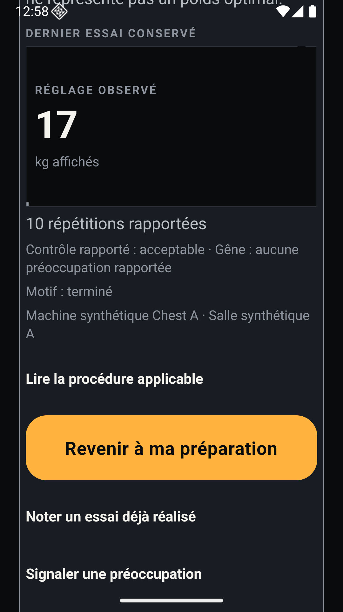

UX-CAL-02 · Comparatif natif
Une action dominante, un réglage avec son unité, les détails à la demande.
Delta visuel contrôlé accepté le 9 novembre 2026. Décision opérateur : « Valider ce delta visuel contrôlé ». Les gates physiques et de déploiement restent séparés.
68 → 48 dp
CTA mesuré dans les PNG Android à fonte normale (−29,4 %), cible tactile conservée.
Confirmation visible
Réglage machine : le CTA entre dans le premier écran360dp ; il était sous la ligne de flottaison.
Deux volets factuels
Essai puis ressenti, même brouillon et même commande ; aucune confirmation implicite.
Les valeurs17(machine) et8(par haltère) sont des saisies synthétiques de test, jamais des recommandations. Les statuts viennent des vrais évaluateurs SCI via les routes propriétaires ; aucun témoignage humain réel n’est revendiqué.
Références acceptées UX-CAL-01 — conservées octet pour octet
Leur état et leurs données sont historiques. Les paires suivantes réexécutent le code accepté avec les mêmes nouveaux cas pour comparer la composition sans modifier ces références.
 Référence acceptée #388 · ios-home.png
Référence acceptée #388 · ios-home.png
Référence acceptée #388 · android-360-machine.png Référence acceptée #388 · ios-rdl-setting.png
Référence acceptée #388 · ios-rdl-setting.pngEntrée / reprise · avant / après
Entrée / reprise · iOS
Entrée / reprise · Android
Réglage machine · avant / après
Réglage machine · iOS
Réglage machine · Android
Réglage PER_IMPLEMENT · avant / après
Réglage PER_IMPLEMENT · iOS
Réglage PER_IMPLEMENT · Android
Parcours commun · les étapes de la rencontre
Largeurs et grande fonte
Sources, consommateurs et limites de recette
- Entrée/reprise : vrai PlanV3FirstUseScreen, contrôleur propriétaire, AuthSession et SQLite. Étapes détaillées : même CalibrationEncounterInstrument de production, branché au même contrôleur et aux lectures HTTP réelles.
- Contexte/unité : progress.context ; valeur choisie : saisie de test du brouillon ; observation/qualification : véritables événements synthétiques et décision serveur. Aucun réglage n’est promu en masse externe totale.
- Les références SCI, MISSION, exécution, ack temporel, palette, composants globaux et baselines restent inchangés. Aucun rail ni illustration ajouté.
- Overlay engrenage Expo Go et pied « revue contrôlée » : outils du banc, pas la composition distribuée. L’app Android ConnectedApp complète reste bloquée par un module natif absent de cet hôte ; ces rendus ne prétendent pas fermer ce gate.
- Clavier décimal, retour matériel Android, VoiceOver/TalkBack complets et appareils physiques : recette ouverte. Arbre AX iOS observé ; contrôles de navigation, reprise et JSON strict vérifiés par tests consommateurs. Aucune saisie clavier réussie n’est inventée.
- Grande fonte : croissance et défilement visibles ; les captures ne sont pas une certification d’accessibilité complète.
- Broad local25suites/376tests avant dernières corrections ; suites touchées34tests et TypeScript passants sur le correctif final. Revues indépendantes initiales et corrections passantes. CI de ce futur commit UI encore à exécuter après acceptation.
Empreintes et provenance des captures · Board historique accepté